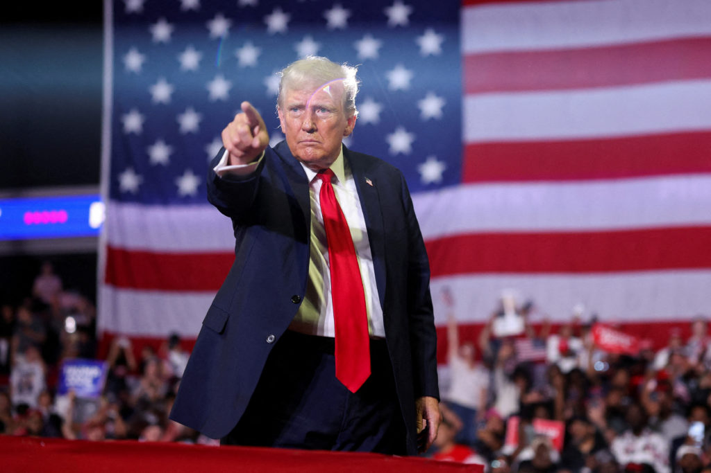
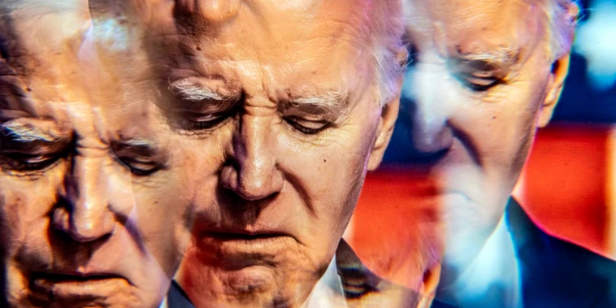
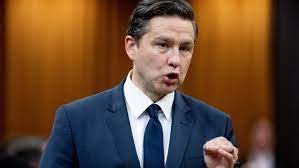
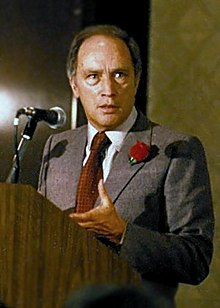

Donald Trump was the 45th president of the United States. He is currently involved in some scandals such as the "hush money trial." He could potentially serve jail time due to his wrongdoings. 
Joe Biden hasn't really been of large benefit for Americans, but he's slightly better than Trump in my opinion due to his rizz. His son, Hunter biden illegally purchased a gun, but Mr. Joe doesn't meddle in between and mentions that he loves his fasmily dearly no matter the circumstance at hand!
Pierre Poilievre is a very well known politician. I actually had the pleasure to meet him a while back at a banquet hall and he shared some views on matters which he believes is important to address. 
Pierre Trudeau has a very charmatic presence and has in fact united Canada to become one great family. His advocacy in fighting for abortion and feminism, as well as adopting medically assisted dying was also prominently known. "Just watch me" was a famous quote he said on October 13, 1970 during the October Crisis. In fact, this saying is still used in political discussions today! 
Jagmeet Singh is a very involved politician who always listens to the voices of communal members. I had the
pleasure of discussing about my involvement in a youth council he has supported, and have arranged to door knock and
support his candidacy. I met him at the Bonsor Recreation Complex a long time back and numerous festivals in the
lower mainland too.
Saving the best for last, Barack Obama is considered "America's sweetheart" by many. He was the 44th president of the United States. He was in fact the first African president to be elected. His efforts are noteworthy since he helped with economical downfalls due to the Great Recession from 2008-2009 while also reforming landmark healthcare systems. This led to him receiving the jNobel Peace Prize in 2009.